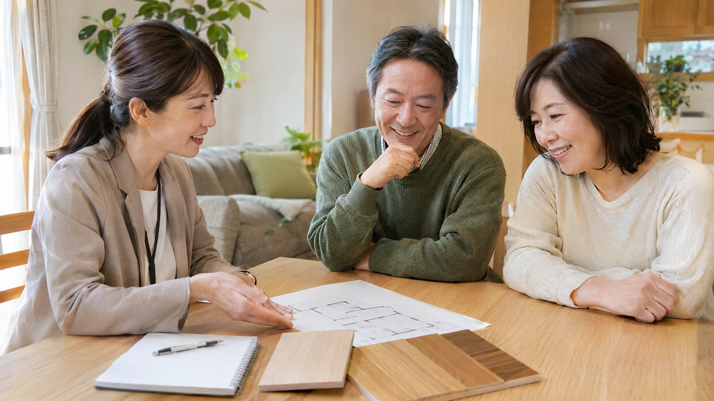

リフォーム会社に相談したい。でも、商品を決めるのが先？ 見積もりを頼んだら、そのまま契約になるの？ 初めてだと、次に何をすればいいのか迷いますよね。
まず用意したいのは、困っている場所の写真と「どう楽になりたいか」の一言です。相談から完成までを、住まい手がすることに絞って見ていきましょう。今いる段階から読める、打ち合わせの道しるべです。
相談に持っていける、暮らしのヒント
公開日：
 文｜エイスケ（住宅と教育の専門家）
文｜エイスケ（住宅と教育の専門家）

リフォーム会社に相談したい。でも、商品を決めるのが先？ 見積もりを頼んだら、そのまま契約になるの？ 初めてだと、次に何をすればいいのか迷いますよね。
まず用意したいのは、困っている場所の写真と「どう楽になりたいか」の一言です。相談から完成までを、住まい手がすることに絞って見ていきましょう。今いる段階から読める、打ち合わせの道しるべです。
相談したら、すぐに工事が始まるわけではありません。現地を見てもらい、提案を比べ、内容に納得してから契約します。細かな順序は会社や工事で異なりますが、住まい手の準備は次のようにつながります。
「次回までに、私たちは何を決めておけばよいですか？」
商品、色、日程など、その都度の宿題と期限を一つのメモに残しておきましょう。
例えば「キッチンを新しくしたい」なら、もう少しだけ暮らしの様子を添えてみます。「夕食の準備中、冷蔵庫へ来る家族とぶつかる」。ここまで伝わると、設備交換でよいか、配置から考えるかを相談しやすくなります。
好きな事例写真があれば、「この色」なのか「この収納」なのか、気に入った理由も添えましょう。希望がいくつもあるときは、私なら一番かなえたいことにだけ丸を付けます。予算に合わせて選ぶとき、その丸が判断の助けになるからです。
相談先は、希望に近い工事の実例を扱う会社から探します。最初の問い合わせでは、戸建てかマンションか、築年数の目安、困りごとを伝えましょう。相談・調査・見積もりの費用と、有料になる段階も依頼前に聞いておきます。
現地調査では、普段その場所を使う人が立ち会うと話が進みます。「ここを通るとぶつかる」「この棚に手が届きにくい」と、いつもの動きを見てもらいましょう。図面や過去の工事資料があれば用意します。
マンションなら管理規約や工事申請、賃貸なら貸主の承諾が関わります。会社に任せる手続きと、自分がする手続きを確認してください。商品は、設置できる条件を確かめながら絞ります。ショールームでは、引き出す、手を伸ばす、掃除する動きを試すと選びやすくなります。
| 見積もりで見ること | そのまま使える質問 |
|---|---|
| 工事の範囲 | 「今のまま残る場所はどこですか？」 |
| 総額と追加 | 「税込でいくらですか。まだ金額が決まらない工事はありますか？」 |
| 工事と生活の日程 | 「キッチンが使えないのは、いつからいつまでですか？」 |
| 契約と支払い | 「頼む内容と支払いの時期は、どの書類で確認できますか？」 |
複数社には同じ希望を伝え、範囲や商品がそろった案で比べます。説明と書類が一致し、金額・日程・保証にも納得できたら契約へ進みましょう。追加・変更が出たときの相談方法も、ここで決めます。
工程表に家族の予定を重ねると、準備が具体的になります。キッチンを使えない日は食事をどうするか。浴室を使えない日はどこで入浴するか。在宅勤務の会議と大きな音が出る作業が重ならないか。「使えなくなる日」と「また使える日」を担当者に書いてもらいましょう。
移動する荷物、職人さんの出入りや駐車場所、近隣への挨拶の分担も確認します。仮住まいが必要なら、その費用や引っ越しも予算と日程に加えます。工事が始まったら、変更の相談は決めた担当窓口へ。追加の費用や完成日の変更を確かめ、合意を残してから進めます。
完成確認の日は、普段使う人も一緒に、扉を開く、水を出す、リモコンを押すなどの操作を試します。頼んだ内容と仕上がりを確認し、気になる場所はその場で担当者に伝えましょう。手直しが残る場合は、内容と予定日、次に確認する人を記録します。
最後に、最初のメモへ戻ってみてください。「二人で料理しやすくしたい」という希望なら、二人で立って、冷蔵庫や収納へ動いてみる。暮らしの困りごとがどう変わったかまで確かめると、新しい住まいの使い方がつかめます。説明書・保証書と、困ったときの連絡先も受け取りましょう。
「どのくらいの費用で、どこまでできるか知りたい」と伝えて相談できます。使えるお金の目安があれば共有し、優先する工事と後でもよい工事を一緒に整理しましょう。
希望する完成時期があるなら、早めに相談して逆算してもらいましょう。調査や商品選び、管理組合の申請、商品の手配にも時間がかかります。工事期間だけで予定を組まないのがコツです。
「このリフォームで、一つかなうなら何がうれしい？」。家族の答えと写真を、最初の相談へ持っていきましょう。
構成・読者の困りごとの参考
関連記事
この記事を書いた人｜エイスケ
1986年生まれ。実家の工務店・不動産に10年間従事したのち、教育の世界へ。住宅と教育、両方の視点から「豊かな暮らし」をテーマに執筆します。※本コラムは筆者個人の見解・経験に基づくものです。最終的な判断は各分野の専門家にご相談ください。